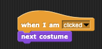

Building your app

The video below oulines the basics of the Snap! programming IDE.
This will be used to complete the programming activities.
1. Create two costumes for the sprite.
A. Go to File menu, and select "Costumes". Then choose "alonzo.gif".
B. Right-click the Alonzo costume in the gray costume area and select "duplicate."
C. Then, right-click the new costume, select "edit," and click the "flip <->" button. Then, click "OK."
2. Now, program the sprite to change costumes when alonzo is clicked.
Click the "Scripte" tab above the staging area, and drag blocks into it to build this script:

This animation shows where to find the blocks and hot to snap them together:
3. Click on Alonzo, on the white stage. If your script works, Alonza should face the other way.
Try it out with Snap!